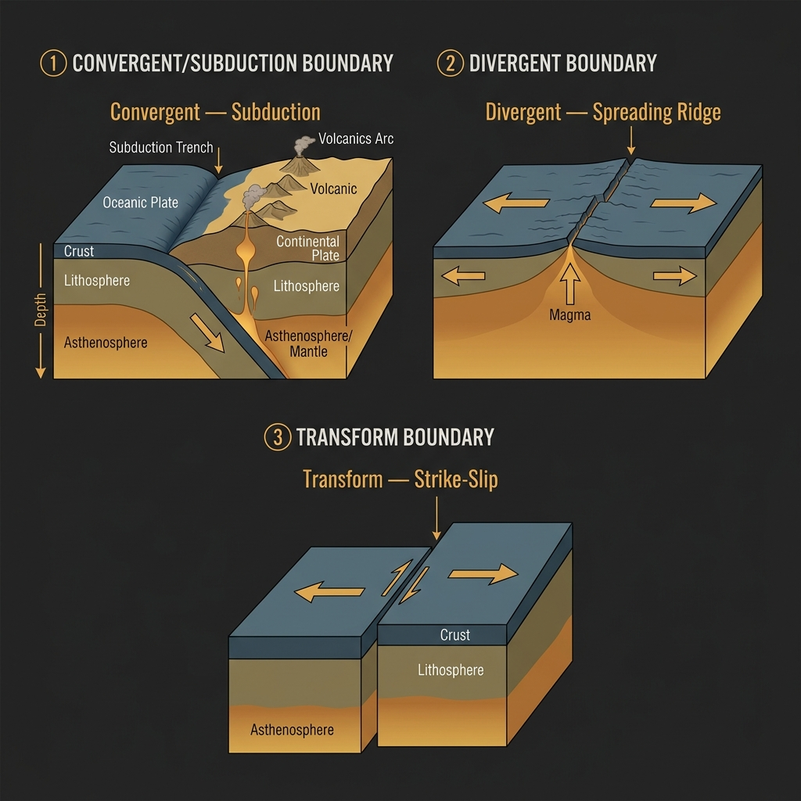

1. The Engine Beneath
The theory of plate tectonics is one of the most powerful unifying ideas in all of science — on par, in explanatory reach, with natural selection or quantum mechanics. In the century before its acceptance, geologists had accumulated a catalogue of observations that made no sense under existing theory: identical fossils on continents separated by thousands of kilometres of ocean; mountain ranges with identical geological signatures on opposite sides of the Atlantic; ancient glacial deposits in equatorial Africa. The Australian continent has its own contribution to this puzzle — Gondwana, the supercontinent from which Australia rifted approximately 45 million years ago, left geological scars that are still being read by researchers today.
The mechanism driving plate tectonics is mantle convection. The Earth's mantle — the thick layer of rock between the thin outer crust and the metallic core — is not solid in any conventional sense. Under the enormous pressures and temperatures of the deep Earth, mantle rock behaves as an extremely viscous fluid over geological timescales, circulating in vast convection cells driven by internal heat. Hot material rises at spreading centres beneath the ocean, cools as it spreads laterally, and sinks back into the mantle at subduction zones. This conveyor belt drags the tectonic plates on which the continents and oceans sit.
The plates move slowly — most travel between 2 and 15 centimetres per year, roughly the rate at which your fingernails grow. The Indo-Australian Plate, which carries Australia, moves at approximately 7 centimetres per year toward the north-northeast — one of the fastest rates of any major tectonic plate. Over the course of a human lifetime, that amounts to about 5 metres of lateral movement. The geological consequences accumulate on a timescale that dwarfs human civilisation, but they manifest in seconds when a fault finally gives way.
2. The Three Types of Plate Boundary
The character of an earthquake is deeply influenced by the type of boundary that produces it. There are three fundamental configurations, each with its own seismic signature and hazard profile.
Convergent boundaries occur where two plates move toward each other. When an oceanic plate meets a continental plate, the denser oceanic plate is forced beneath the lighter continental crust in a process called subduction. The descending slab grinds against the overriding plate, building enormous compressive stress. When this stress releases, it does so as megathrust earthquakes — the largest class of seismic event known. The 2011 Tōhoku earthquake (Mw 9.1) and the 2004 Sumatra–Andaman earthquake (Mw 9.1–9.3) were both megathrust events at subduction zones. When two continental plates collide — as the Indian subcontinent drives into Eurasia, building the Himalayas — the process is slower but similarly compressive, generating large earthquakes across a broad deformation zone.
Divergent boundaries are where plates move apart. The Mid-Atlantic Ridge, where North and South America move away from Eurasia and Africa at 2–3 cm per year, is the classic example. New seafloor is created as magma wells up to fill the gap. Earthquakes at divergent boundaries tend to be moderate in magnitude — the crust is hot, thin, and relatively weak, limiting how much stress can accumulate — but they can be locally destructive. The East African Rift System, which will eventually split the African continent, is a divergent zone that periodically generates damaging earthquakes across Ethiopia, Kenya, Tanzania, and Mozambique.
Transform boundaries are where plates slide laterally past each other. The San Andreas Fault in California is the world's most studied example — the Pacific Plate slides northwest relative to the North American Plate at approximately 5 cm per year. The Alpine Fault in the South Island of New Zealand performs the same function, running for 850 kilometres through spectacular landscape as the Pacific Plate grinds past the Australian Plate. Transform boundaries generate frequent, often shallow earthquakes that can be highly destructive in densely built areas.

3. Subduction Zones and the Origin of Megaquakes
If plate boundaries in general are where earthquakes are born, subduction zones are where the most dangerous ones live. The geometry of subduction is deceptively simple: a cold, dense oceanic plate descends beneath a lighter plate at an angle of 20 to 60 degrees, diving into the mantle at rates of up to 10 cm per year. Along the interface between the two plates — the megathrust fault — friction locks the plates together while the slab below continues to pull downward. The locked zone accumulates stress like a compressed spring. Over centuries or millennia, the stress grows until the interface ruptures, lurching the overriding plate upward by metres in a matter of minutes.
This sudden vertical displacement of the seafloor is what generates tsunamis. During the 2011 Tōhoku earthquake, the seafloor in some areas moved laterally by more than 30 metres in under three minutes. The overlying water column, unable to accommodate that instantaneous displacement, was pushed upward and outward. The resulting tsunami wave struck the Japanese coast with heights exceeding 40 metres in some locations.
Australia sits well clear of active subduction zones on its northern and northeastern margins. However, the subduction zones of the Pacific Ring of Fire are close enough that submarine landslides or large megathrust events can generate tsunamis that travel across the Pacific or Indian Ocean and arrive on Australian shores with meaningful wave heights. Geoscience Australia maintains the Joint Australian Tsunami Warning Centre (JATWC) precisely because this risk is not hypothetical.
4. The Ring of Fire and the World Beyond It
The Circum-Pacific Belt — commonly known as the Ring of Fire — is a horseshoe-shaped zone of subduction zones and transform faults encircling the Pacific Ocean. It accounts for approximately 90% of the world's earthquakes and 75% of its active volcanoes. Countries sitting on or near the Ring of Fire — Japan, Chile, Indonesia, New Zealand, the Philippines, the United States — have built their entire disaster management infrastructure around the assumption of repeated, large seismic events.
Australia sits conspicuously outside this belt — and yet the false security this geography seems to offer is precisely what makes Australian seismic hazard so underestimated. The second most seismically hazardous zone in the world — the Alpide Belt — extends from southern Europe through Turkey, Iran, India, and into Southeast Asia. The 2023 Kahramanmaraş, Turkey sequence (Mw 7.8 and Mw 7.7) killed more than 50,000 people within hours. Australia's geological position places it remote from both belts — but, as the science of intraplate seismicity demonstrates, being far from a plate boundary is not the same as being safe.
References
- Kearey, P., Klepeis, K. A., & Vine, F. J. (2009). Global Tectonics (3rd ed.). Wiley-Blackwell.
- Stein, S., & Wysession, M. (2003). An Introduction to Seismology, Earthquakes, and Earth Structure. Blackwell.
- Stirling, M. W., et al. (2012). National Seismic Hazard Model for New Zealand: 2010 update. Bulletin of the Seismological Society of America, 102(4), 1514–1542.
- Geoscience Australia. (2018). National Seismic Hazard Assessment for Australia. Australian Government.
- GNS Science. (2012). Canterbury Earthquakes: Understanding the sequence and its aftermath. Lower Hutt, New Zealand.